Rate-Based Cardiac Rhythm Triage
Sub-millisecond, sub-kilobyte rhythm-regime classifier. Triages beat-rate patterns (bradycardic, normal, tachycardic, transition-irregular) in 928 bytes of RAM using delay-line coincidence detection.
Validation status: v0.6 AAMI EC57:2012 inter-patient evaluation on MIT-BIH DS2 (22 records) with clinician rhythm-annotation ground truth (AFIB / SBR / SVTA / VT / B / T …): 78.4 % pooled accuracy, macro-F1 0.78, balanced accuracy 0.75. Adding a normalised RR-range rule (range/RR > 0.40) lifted Irregular recall from 0.19 to 0.78 (4×) on the same data. Side-by-side with a hand-coded band-gate + RR-window rule: 78.7 % — CricketBrain is on par, not better. The legacy v0.5 96.6 % number used a CV-based ground truth that was partially circular; v0.6 numbers are the honest replacement.
Triage, not diagnosis. Flags beat-rate regimes only — not morphology-aware arrhythmia, not AF / VT / AVB / ST-elevation, not a substitute for clinical ECG. Targets the earlier layer in the monitoring chain.
Real MIT-BIH Results — v0.6 (AAMI DS2, clinician GT)
AAMI EC57:2012 inter-patient evaluation on the canonical MIT-BIH DS2 split — 22 patients, 49 584 annotation beats. v0.6 introduces two corrections: (1) ground truth is now a hybrid — the MIT-BIH clinician rhythm-change annotation ((AFIB, (SBR, (SVTA, (B, (T, …) when unambiguous, falling back to a 5-beat sliding RR window otherwise (mitbih::rhythm_label_to_class); (2) the detector now uses an additional normalised RR-range rule (range/RR > 0.40) so that bigeminy / trigeminy / AFIB with stable short RRs are no longer missed.
Pooled confusion matrix — AAMI DS2, hybrid GT
| pred Normal | pred Tachy | pred Brady | pred Irregular | recall | |
|---|---|---|---|---|---|
| truth Normal | 17 813 | 13 | 79 | 3 382 | 0.837 |
| truth Tachy | 49 | 3 058 | 0 | 1 308 | 0.693 |
| truth Brady | 280 | 0 | 5 268 | 2 020 | 0.696 |
| truth Irregular | 2 227 | 304 | 28 | 9 107 | 0.781 |
The Irregular-class fix. v0.5 reported 0.84 Irregular recall against a CV-based ground truth that was partially circular with the detector's own CV rule. Under the more honest clinician-annotated hybrid GT, the v0.5 detector dropped to 0.19 Irregular recall — AFIB segments with stable short RR were silently misclassified. v0.6 adds range/RR > 0.40 to the classifier and lifts Irregular recall to 0.78 on the same data. Trade-off: Normal / Tachy / Brady recalls drop ~10–30 pp because the new rule fires more often. Stable rapid AFIB cannot be reliably distinguished from sinus tachy by short-window RR features alone — that is a fundamental limit of rate-regime triage and is not solved here.
Per-record accuracy — honest patient-level variability
| Record | Beats | Truth | Accuracy | AAMI N / S / V / F / Q |
|---|---|---|---|---|
| 100 | 2 272 | 2 266 | 100.0 % | 2 238 / 33 / 1 / 0 / 0 |
| 103 | 2 083 | 2 077 | 100.0 % | 2 081 / 2 / 0 / 0 / 0 |
| 105 | 2 556 | 2 370 | 97.3 % | 2 511 / 0 / 41 / 0 / 4 |
| 111 | 2 123 | 2 114 | 100.0 % | 2 122 / 0 / 1 / 0 / 0 |
| 113 | 1 795 | 1 417 | 93.7 % | 1 789 / 6 / 0 / 0 / 0 |
| 117 | 1 535 | 1 518 | 99.9 % | 1 534 / 1 / 0 / 0 / 0 |
| 121 | 1 863 | 1 699 | 98.3 % | 1 861 / 1 / 1 / 0 / 0 |
| 123 | 1 517 | 1 429 | 98.7 % | 1 514 / 0 / 3 / 0 / 0 |
| 200 | 2 594 | 1 897 | 90.9 % | 1 738 / 30 / 824 / 2 / 0 |
| 202 | 2 134 | 1 852 | 97.3 % | 2 060 / 54 / 19 / 1 / 0 |
| 210 | 2 644 | 2 288 | 96.4 % | 2 421 / 22 / 191 / 10 / 0 |
| 212 | 2 748 | 2 594 | 98.3 % | 2 748 / 0 / 0 / 0 / 0 |
| 213 | 3 250 | 3 216 | 99.8 % | 2 641 / 28 / 219 / 362 / 0 |
| 214 | 2 257 | 1 798 | 89.2 % | 2 001 / 0 / 253 / 1 / 2 |
| 219 | 2 153 | 1 979 | 98.2 % | 2 081 / 7 / 64 / 1 / 0 |
| 221 | 2 420 | 1 823 | 93.5 % | 2 028 / 0 / 392 / 0 / 0 |
| 222 | 2 466 | 1 794 | 92.6 % | 2 258 / 208 / 0 / 0 / 0 |
| 228 | 2 047 | 1 612 | 96.0 % | 1 683 / 3 / 361 / 0 / 0 |
| 231 | 1 570 | 1 405 | 97.9 % | 1 568 / 1 / 1 / 0 / 0 |
| 232 | 1 746 | 1 318 | 90.7 % | 365 / 1 381 / 0 / 0 / 0 |
| 233 | 3 059 | 1 329 | 86.5 % | 2 228 / 7 / 813 / 11 / 0 |
| 234 | 2 752 | 2 715 | 99.7 % | 2 699 / 50 / 3 / 0 / 0 |
Range: 86.5 % (record 233, frequent PVCs & AF) ↔ 100.0 % (records 100, 103, 111). Accuracy drops on records with frequent ventricular ectopics (200, 214, 233) and AF (232) because rate-regime classification is fundamentally limited when ectopic beats disrupt the RR pattern. AAMI N/S/V/F/Q columns are traceability only: CricketBrain does not classify morphology classes.
Baseline comparison — CricketBrain on par with a hand-coded rule
| System | Emissions | Accuracy | Macro F1 | Balanced acc |
|---|---|---|---|---|
| CricketBrain (v0.6) | 44 936 | 78.44 % | 0.7793 | 0.7515 |
| ThresholdBurst rule (band-gate + RR-window, same v0.6 rule) | 44 920 | 78.74 % | 0.7827 | 0.7551 |
| Frequency rule (1-second window QRS counter) | 9 573 | 18.21 % | 0.0770 | 0.2500 |
Honest finding (under hybrid clinician GT). A 50-line band-gate + RR-window rule (ThresholdBurstBaseline) is ~0.3 pp better than CricketBrain on AAMI DS2. The trivial 1-second-window rule fails badly at 18.2 %, so the task is non-trivial — but the neuromorphic core does not beat a careful classical rule on rate-regime triage. CricketBrain's value proposition is: 928 bytes RAM, deterministic, zero training, the same circuit reused across UC02 bearings / UC03 marine / UC04 grid, not "we solve a hard problem".
Drift-robustness sweep — honest result
We hypothesised CricketBrain's Gaussian tuning would degrade more gracefully than the rule's hard ±10 % band-pass under QRS carrier-frequency drift. The data did not support that hypothesis. A synthetic drift sweep (15 offsets in [−20 %, +20 %]) shows the rule has clean cliffs at ±10 % (its band edge), while CricketBrain's response is non-monotonic: it works at off ∈ {0 %, ±1 %, ±5 %, +20 %} and emits zero classifications at off ∈ {−3 %, −7 %, −10 %, +3 %, +7 %, +10 %, ±15 %}. Both systems break around the same drift band, but neither is meaningfully more robust. CSV at results/cardiac_drift_sweep.csv.
Reproduce:
pip install -r python/requirements.txt →
python python/download_mitbih.py →
for r in 100 103 105 111 113 117 121 123 200 202 210 212 213 214 219 221 222 228 231 232 233 234; do python python/preprocess.py --record $r; done →
cargo run --release --example cardiac_mitbih -- --records-dir <dir> --aami-split ds2 --write and
cargo run --release --example cardiac_mitbih_baselines -- --records-dir <dir> --aami-split ds2 --write.
Result files committed to use_cases/01_cardiac_arrhythmia/results/.
Synthetic-only Hardening — v0.2
Baseline measurements on synthetic P-QRS-T waveforms (deterministic SplitMix64 generator, fixed seed). Used for stress-test sweeps and reject-aware curves where real-patient data has no equivalent ground truth.
The legacy 92.5 % / 0.962 numbers used a circular ground-truth path (the detector's own BPM defined the truth) and have been retired. v0.2 truth-based numbers above are the honest replacement; full per-class metrics, stress sweeps and the reject-aware curve live in BENCHMARK_ROADMAP.md.
Signal Detection Theory — synthetic
d′ / TPR / FPR (Green & Swets 1966)
| Condition | d' | TPR | FPR | TPR 95% CI | Rating |
|---|---|---|---|---|---|
| Tachycardia vs Normal | 6.18 | 1.000 | 0.000 | [0.981, 1.000] | EXCELLENT |
| Bradycardia vs Normal | 6.18 | 1.000 | 0.000 | [0.981, 1.000] | EXCELLENT |
| Normal vs Tachycardia | 6.18 | 1.000 | 0.000 | [0.981, 1.000] | EXCELLENT |
200 signal + 200 noise trials per condition on synthetic P-QRS-T cycles. Wilson 95 % confidence intervals. d′ uses the Hautus 1995 log-linear correction. This SDT setup measures synthetic-rhythm discriminability, not real-patient performance — for that, see the v0.4 MIT-BIH section above.
Stress Test — Honest Limits
Where does the detector break? Side-by-side: raw CricketBrain vs. with preprocessing.
Noise Rejection: Without vs. With Preprocessor
| Noise Level | Without Preprocessor | With Preprocessor | Improvement |
|---|---|---|---|
| 0% (clean) | 100.0% | 100.0% | — |
| 10% | 42.1% | 75.6% | +33.5% |
| 20% | 16.7% | 84.4% | +67.7% |
| 30% | 35.1% | 70.0% | +34.9% |
| 50% | 82.6% | 63.6% | — |
| 70% | 8.6% | 1.9% | Both fail |
The EcgPreprocessor applies temporal consistency filtering: in-band signals must persist for 3+ consecutive steps to pass through. Single-step noise spikes are rejected. Gap tolerance (2 steps) bridges brief interruptions within real QRS bursts.
Other Stress Tests
| Test | Conditions | Result | Verdict |
|---|---|---|---|
| Extreme rates (30–250 BPM) | 10 rates, 12 cycles each | 10/10 correct | PASSES |
| Boundary ±1 BPM | 59/61/99/101 BPM | 4/4 correct | PASSES |
| Random RR (irregular) | 300–1200 ms, 30 beats | 82% detected | PASSES |
| Rapid switching (3-beat) | Normal↔Tachy alternation | 89% Irregular | Expected |
How It Works
The 5-neuron Münster circuit
CricketBrain's core is a hardwired 5-neuron / 6-synapse delay-line coincidence detector inspired by the field cricket's auditory T-cell circuit (Münster model). Two delay lines feed a coincidence neuron: only when both inputs arrive within the integration window does it fire. There is no matrix multiplication, no weights to train, no GPU — just timing.

Why this matters for UC01. The same 5-neuron circuit is reused across UC02 (bearing vibrations), UC03 (marine acoustics) and UC04 (power-grid harmonics) by changing only min_freq/max_freq. No retraining, no new architecture — the “Daseinsberechtigung” is cross-domain reuse in 928 bytes, not state-of-the-art rate-regime accuracy on any single task. On AAMI DS2 a 50-line band-gate rule is on par with this circuit; what the circuit buys you is portability across signal domains and zero training data.
Cardiac detection pipeline
How It Compares
Against Pan-Tompkins QRS detection, TinyML ECG classifiers (Nuzzo 2023 Tiny MF-CNN), the Stanford cardiologist-level DNN (Hannun 2019), and the Apple Watch AFib algorithm. All TinyML / DNN numbers from peer-reviewed papers or FDA filings.
RAM, Model Size & Latency
| System | RAM | Model size | Latency |
|---|---|---|---|
| CricketBrain UC01 | 928 B | ~20 KB flash | 0.126 µs/step |
| Pan-Tompkins (QRS + rule-based) | < 1 KB | < 5 KB | 1-10 ms/beat |
| Tiny MF-CNN (Nuzzo 2023) | ~4-8 KB | 15 KB | < 1 ms on RPi |
| Stanford DNN (Hannun 2019) | GPU-class | ~10-40 MB | 30 s window |
| Apple Watch AFib | proprietary | ~1-10 MB | 30-60 s polling |
Accuracy & Training Data
| System | Task | Accuracy / F1 | Training data |
|---|---|---|---|
| CricketBrain UC01 (v0.6) | 4 rate classes | 78.4 % MIT-BIH AAMI DS2 (clinician GT), macro-F1 0.78 | Zero |
| Pan-Tompkins + rate logic | 4 rate classes | ~90% on MIT-BIH | Zero |
| Tiny MF-CNN (Nuzzo 2023) | 5 AAMI classes | 98.18% acc, F1 0.92 | MIT-BIH inter-patient |
| Stanford DNN (Hannun 2019) | 12 rhythm classes | F1 0.837 (beat cardiologist avg 0.780) | 91 k ECGs, 53 k patients |
| Apple Watch AFib | AFib vs Sinus | 98.3% sens / 99.6% spec | millions of users |
CricketBrain's 78.4 % pooled accuracy on real MIT-BIH AAMI DS2 with clinician rhythm-annotation ground truth is on rate-regime triage only — and a hand-coded band-gate + RR-window rule reaches 78.7 % on the same data, so the neuromorphic core does not beat classical rules here. Morphology-aware CNNs (Tiny MF-CNN, Stanford DNN) tackle the harder 5- and 12-class problems with 15 KB – 40 MB RAM and labelled training data. Different problems, different operating envelopes — see docs/competitive_analysis.md.
When to Pick Which
| Scenario | Recommendation |
|---|---|
| Implantable loop recorder, sub-mW, rate-only triage | CricketBrain |
| Earbud / patch, privacy-preserving, no cloud | CricketBrain |
| Wearable with Cortex-M4F+, AAMI 5-class morphology | Tiny MF-CNN / TinyML |
| Clinical monitor, 12-class rhythm + morphology | Stanford DNN / commercial wearable |
| FDA-cleared AFib detection | Apple Watch / commercial |
Full sourced breakdown (Nuzzo 2023, Hannun 2019, Apple FDA DEN180044): docs/competitive_analysis.md.
Dataset & License
| Field | Value |
|---|---|
| Primary Dataset | MIT-BIH Arrhythmia Database |
| Dataset License | Open Data Commons Attribution v1.0 |
| Dataset URL | physionet.org/content/mitdb/1.0.0/ |
| Records | 48 × 30 min two-channel ambulatory ECG |
| Sampling Rate | 360 Hz |
| Annotations | ~110,000 beat labels by 2+ cardiologists |
Quick Start
# Clone and build
git clone https://github.com/BEKO2210/cricket-brain.git
cd cricket-brain/use_cases/01_cardiac_arrhythmia
# Run synthetic demo
cargo run --release
# Classify CSV data
cargo run --release -- --csv data/processed/sample_record.csv
# Run all benchmarks
cargo run --release --example cardiac_sdt
cargo run --release --example cardiac_latency
cargo run --release --example cardiac_stress